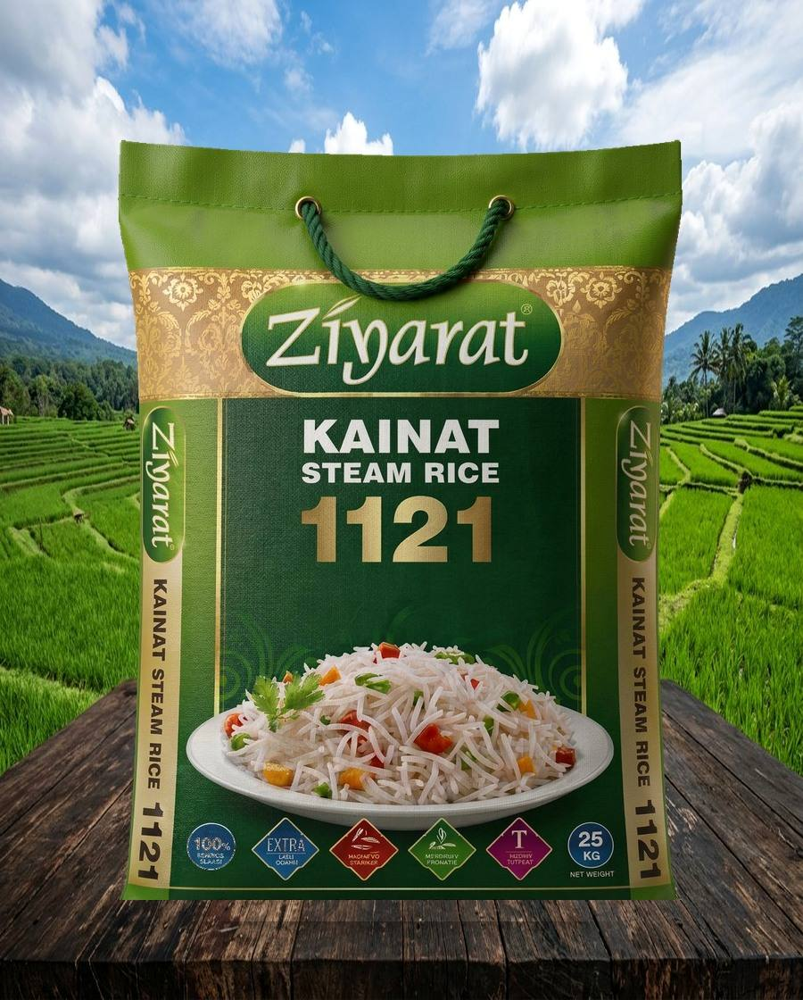
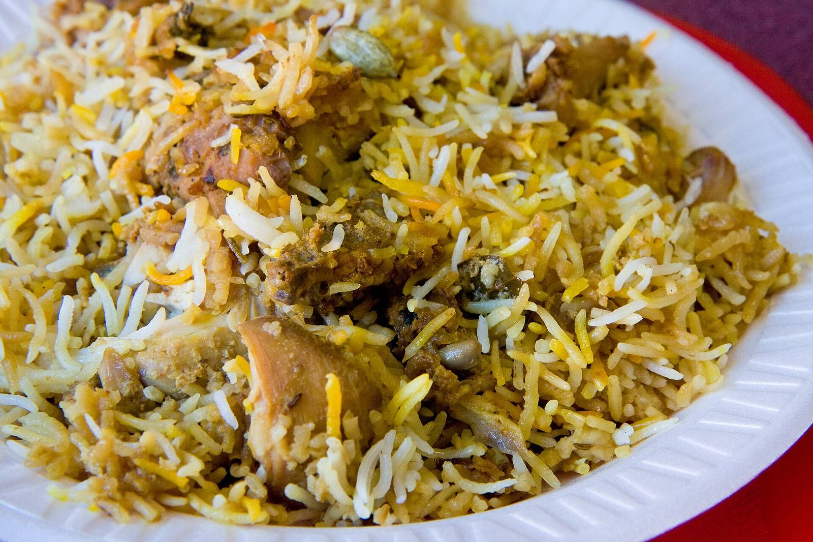
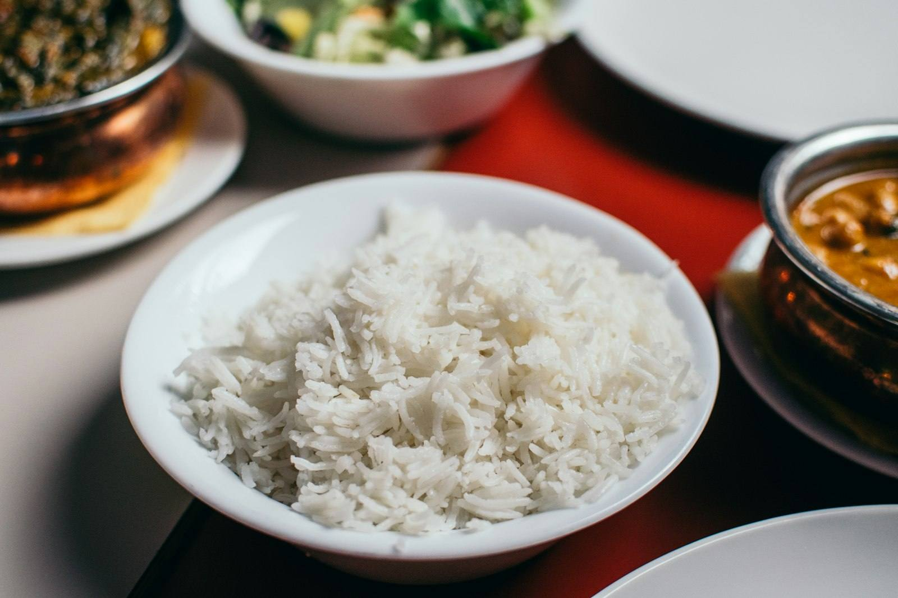

Saith Hanif Rice Mills · Jhabran
From our mill.
To the world’s table.
ایک لذیذ تجربہ ہر دسترخوان پر
Saith Hanif Rice Mills, Jhabran. Extra-long 1121, milled and packed here — Ziyarat and Sultan — for kitchens everywhere.
Scroll
The mill
Saith Hanif Rice Mills, Jhabran.
The mill stands on Jandiala Road, Jhabran — in Punjab’s rice belt. That is the pin on Google Maps, and that is where the bags leave the gate.
Ziyarat and Sultan are the mill’s two product brands — steam, sella, Classic, basmati, short grain, Awami and B-1. The mill stands behind every sack.
Paddy in the breeze · Punjab belt

On the plateOn the table
Length you can see. Aroma you do not need to announce.
Extra-long 1121, Classic, basmati, short grain, Awami and B-1 — steam or sella. Saith Hanif Rice Mills packs the line under Ziyarat and Sultan.

After the lid liftsThe mill’s packs
Ziyarat and Sultan. The full line.

The journey
From standing water to sealed cloth.
01
Paddy
Fields of the Jhabran rice belt.
02
Steam / Sella
The grain is set — fluffy or firm.
03
Mill
Husk, bran, and the long kernel kept.
04
Sort
Sortex-clean. No sooty grain, no stone.
05
Pack
25 kg and 50 kg. Our name on the mouth.
06
Table
Aroma first. Then the length. Then silence.
1121 extra-long grain
On the bag
What we print, we mill.
The promises printed on a mill pack are short, because the mill should not talk louder than the grain.
100%
Sortex
clean
Sortex
clean
Extra
long
grain
long
grain
Steam
and
sella
and
sella
Naturally
aromatic
aromatic
10Packs from this mill
2Brands · Ziyarat · Sultan
25 / 50Kilogram sacks
100%Sortex-cleaned
Trade
Private label, bulk, and the quiet export enquiry.
Distributors, caterers, and importers write to Saith Hanif Rice Mills directly — for Ziyarat, Sultan, or a private label. Tell us the variety, the pack, and the port.
Ready for the quay